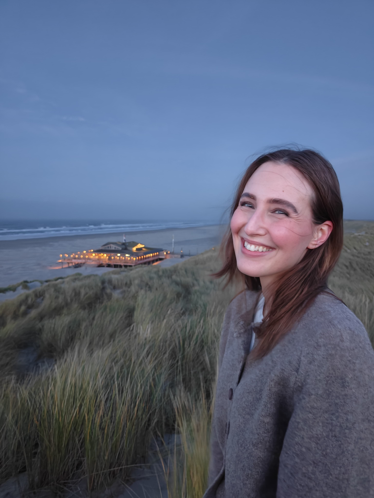

I am a PhD candidate in Economics at the University of Groningen, where I study how technological developments, such as robotization and artificial intelligence (AI), affect the health, wellbeing, and subjective experience of workers.
My current projects examine how robot adoption shapes worker health and wellbeing, using cross-sectional survey data from 20 European countries linked to industry-level robot adoption data, and how attributing work to AI influences perceived task meaning and effort, studied through a survey experiment fielded in the United States and the Netherlands.
More broadly, my research revolves around a common question: what happens to the human experience of work when disruptive technologies reshape it.

This paper provides the first causal evidence that merely attributing identical creative work to AI rather than to a human affects how much meaning people derive from a task and how much effort they are willing to contribute. We conducted a pre-registered survey experiment in nationally representative samples from the United States (N = 1,511) and the Netherlands (N = 2,117). Participants evaluated identical public health campaign slogans that were randomly attributed either to an AI system or to a human professional, allowing us to isolate the causal effect of AI attribution while holding the creative output constant. AI attribution reduced perceived task meaning modestly and made participants 13% less likely to contribute a slogan of their own, indicating lower voluntary effort. These findings suggest that AI can influence work not only by changing productivity but also by altering the perceived value of human contribution itself.
The adoption of robots in the workplace implies significant changes to work structures and processes. By altering the nature of tasks workers do, robotization can influence both their physical health and mental well-being. We examine this using survey data on self-reported health and task content of workers from 20 European countries, alongside industry-level data on industrial robot adoption. Given the purpose and capabilities of industrial robots, we expect them to take over routine and physically taxing activities, thereby reducing physical strain and potentially enhancing mental well-being as workers shift to more stimulating activities. Overall, we find that robotization indeed reduces routine, physically demanding tasks and decreases the likelihood of reporting health issues such as backaches and neck pain. However, results also suggest that robotization worsens workers' mental health due to a reduction in abstract and social activities. Our findings shed light on the mechanisms through which robots affect the workforce along various health and well-being dimensions, offering insights for the responsible integration of technology in the workplace.
Prior to and during my PhD, I have taught across several courses in the Faculty of Economics and Business at the University of Groningen, and have supervised bachelor theses.
I am always happy to discuss research, potential collaborations, or questions about my work. The best way to reach me is by email.